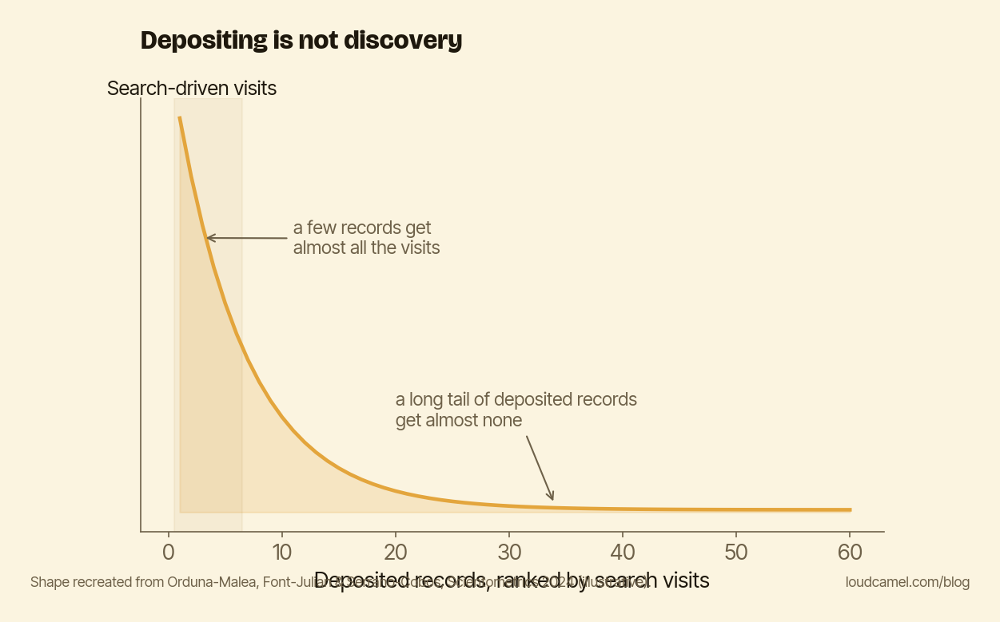

Deposit it and they will not come: open access isn't the same as discovery
A lot of researchers plan to handle visibility themselves, and the plan is usually some version of this: I will upload the preprint, I will fill in my repository profile, and the rest takes care of itself.
It does not. That is the whole message of this post. Depositing your work is necessary, and it is nowhere near sufficient for anyone to find it.
What 217,589 records actually do
Orduña-Malea, Font-Julián, and Serrano-Cobos looked at this directly. Their 2024 paper in Scientometrics has a title that says most of it: “Open access publications drive few visits from Google Search results to institutional repositories.” They analyzed 217,589 bibliographic records and 316,899 organic search keywords across Spain’s national university repositories over roughly three months in late 2023.
The finding is about distribution, not volume. Visits are extremely skewed. A small number of records generate most of the search-driven traffic. A large share of deposited records rank poorly in Google and pull in essentially nothing from search.

The chart above shows the shape of it. A few records sit at the tall end and collect almost all the visits. Then there is a long, flat tail of records that have been dutifully deposited and are invisible to anyone using a search engine to find them. Depositing put every one of those records into the repository. It did not put most of them in front of readers.
“Open” and “findable” are two different jobs
It is easy to assume open access is the whole game, that once the paywall is gone, discovery follows. The evidence says access helps, and access is not the same thing as discovery.
The open-access citation advantage is real, and it is uneven. The largest single analysis, Piwowar and colleagues in PeerJ (2018), found open-access articles cited roughly 18% more than comparable paywalled ones. A systematic review by Langham-Putrow, Bakker, and Riegelman in PLOS ONE (2021) found the literature inconclusive in aggregate. Fewer than half of the 134 studies they examined confirmed an advantage at all.
So the honest reading is mixed. Opening your work can help it get cited. It does not guarantee anyone finds it in the first place. Those are two separate jobs. Making the work open is one. Making the work findable is another, and it does not stop after the upload.
Getting into the short head
The uncomfortable thing about a skewed distribution is that there is no neutral middle. Your record is either in the small group that gets found or the large group that does not, and nothing about the act of depositing decides which.
What decides it is ordinary findability work. A title a stranger would actually type. A plain-language summary written the way people search, not the way an abstract is written for reviewers. Links coming in from pages that already rank. None of that happens automatically when you hit “deposit.” (Closing that gap is most of what we do at Loud Camel, but you can start checking it yourself today.)
Do this this week
Take your most recent deposited paper. Then search for it the way a stranger would, not by your name and not by the exact title, but by the two or three keywords describing what it is actually about. Put them into Google. Put them into an AI search tool.
See whether your paper surfaces at all. If it does, good, you are in the short head for those terms. If it does not, you have found the gap, and the gap is a clearer title, a plain-language summary, and links in from places that already rank. Depositing the preprint is the floor. It was never the finish line.